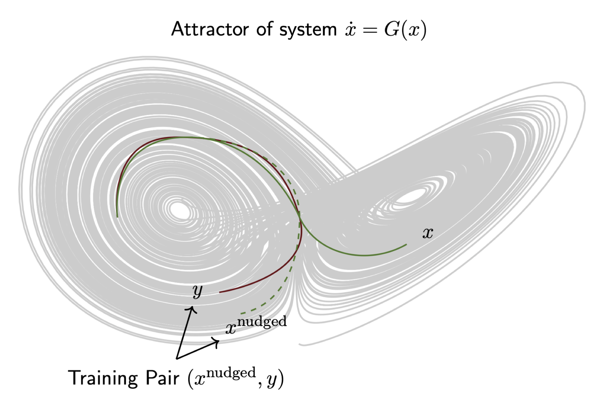
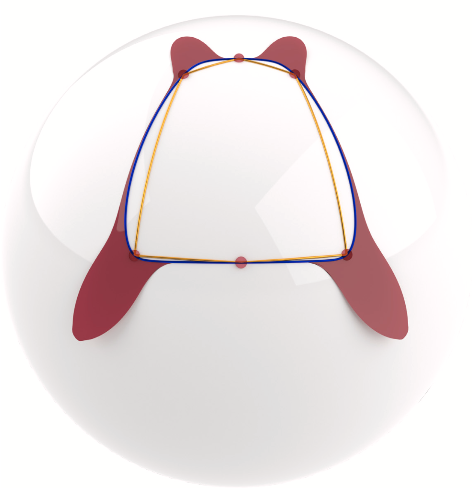
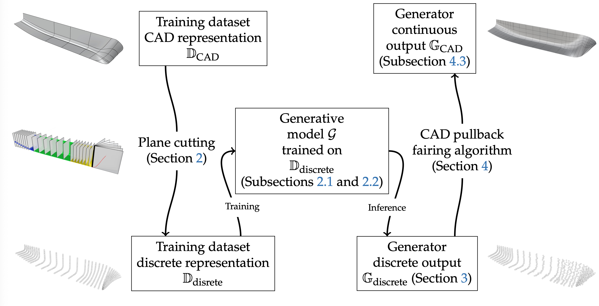
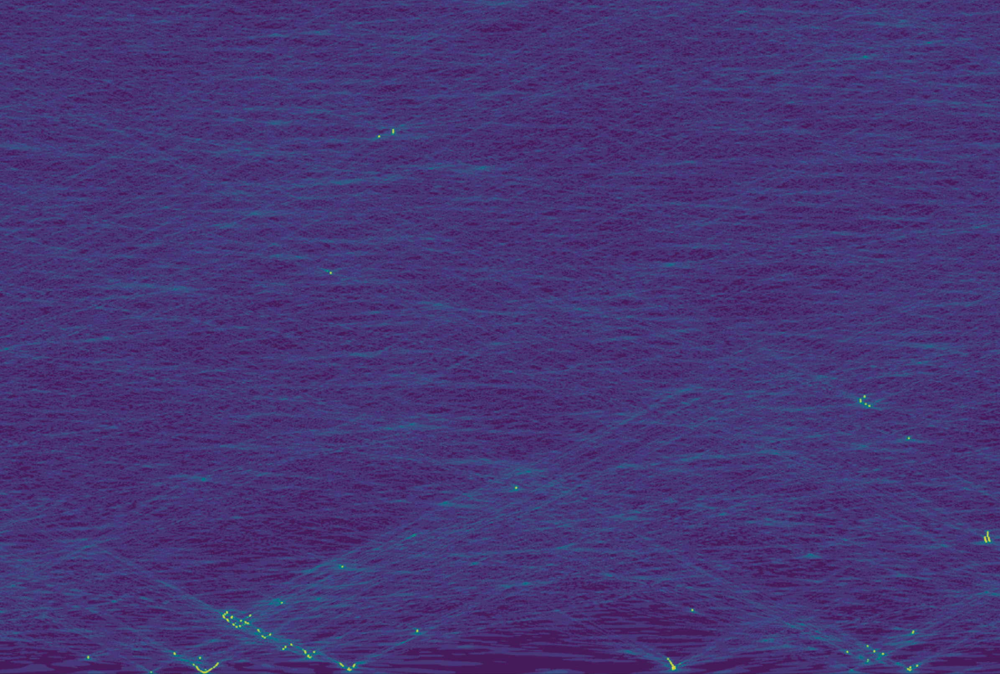

DySCo
- How can decade long climate trajectories be corrected and super-resolved, while maintaining dynamical coherency to their driver?
- Developed a data-driven and computationally tractable reformulation of nudging.
- Tested on the LENS2 ensemble with ERA5 as target.

Shape Preserving Interpolation
- How can on-surface points be interpolated while preserving the underlying geometry?
- Produced a criterion for shape-preserving interpolation.
- Produced a family of provably shape-preserving interpolants on developable surfaces.

Generative Geometry
- How can existing CAD designs be used to explore the resulting design space?
- Produced a generative model with a CAD-to-CAD policy.
- Tested on a suite of generative geometry metrics on the domain of ship-design.

Extreme Events Through Generative Models
- Can diffusion models capture extreme event statistics?
- Produced an apriori geometric criterion which can predict whether generative models will be able generate previously unseen extreme events.
- Tested on 1-D wave turbulence and 3-D Navier-Stokes Lagrangian trajectories.